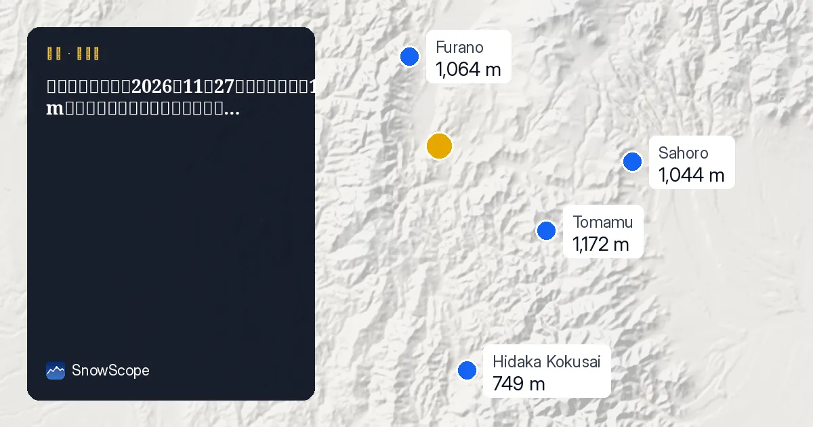

Hokkaido：今日の雪
Hokkaido：今日の雪. 北海道は12月最初のスキーシーズンを迎える準備ができているでしょうか。2026年11月27日の時点では、その答えは場所によって大きく変わります。SnowScope マップでは、キロロの上部ゲレンデにはすでに約119 cm、札幌国際には約103 …
北海道の雪情報（2026年11月27日）：キロロは1 m超、ニセコとルスツはまだ少なめ

北海道は12月最初のスキーシーズンを迎える準備ができているでしょうか。2026年11月27日の時点では、その答えは場所によって大きく変わります。SnowScope マップでは、キロロの上部ゲレンデにはすでに約119 cm、札幌国際には約103 cmの雪がある一方、ニセコユナイテッドは約31 cm、富良野は約29 cm、ルスツはわずか約16 cmです。北海道にある133のスキー場のうち、今日上部ゲレンデに雪があるのは57か所で、30 cm以上あるのは12か所です。
雪が深いところ
トップの2か所は、札幌の西の山あいに並んでいます。標高523〜1,180 mのキロロは約119 cmで、この7日間に約36 cmの新雪がありました。標高620〜1,089 mの札幌国際は約103 cmで、この1週間の新雪は約32 cmです。日本海を渡ってきた冷たい北西の風が最初にぶつかる山なので、この秋、島で最も雪の多いゲレンデになっています。
島の中央では、大雪山の火山にかかるロープウェイ、旭岳が約61 cmで、この1週間の新雪は約57 cmと全スキー場の中で最も多くなりました。サッポロテイネは約40 cm、トマムは約38 cm、サホロは約33 cmです。
2026年11月27日（金曜日）